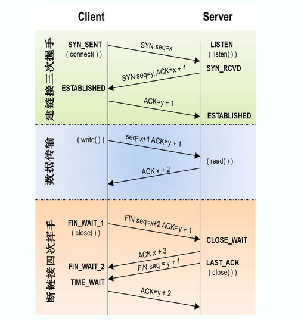
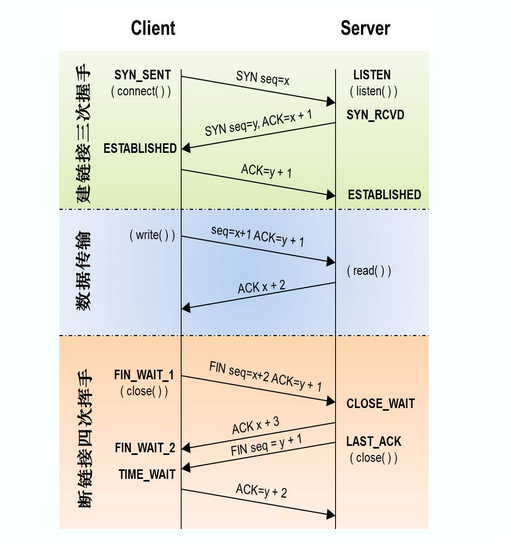

基础概念
网络编程
网络编程就是，让在不同的电脑上的软件能够进行数据传递，即进程之间的通信
网络编程从大的方面说就是对信息的发送到接收，中间传输为物理线路的作用。
网络编程最主要的工作就是在发送端把信息通过规定好的协议进行组装包，在接收端按照规定好的协议把包进行解析，从而提取出对应的信息，达到通信的目的。
中间最主要的就是数据包的组装、过滤、捕获、分析，当然最后再做一些处理，代码、开发工具、数据库、服务器架设和网页设计这5部分你都要接触。
IP地址（IPv4）
- 由4个字节（32位）组成，常写成点分十进制格式（分4次，每个数0~255），有将近43亿个。
IPv6有128位，采用冒分十六进制格式（分8次，每个数0000~FFFF），数量是IPv4数量的43亿倍的43亿倍的43亿倍。（即43亿的四次方，有39位）
- 包括网络地址和主机地址
- 这不是IP地址的分类，而是32个位分为两部分，前一部分叫网络地址，后一部分叫主机地址
- 只有ABC类地址中有这样的划分
- ABC类地址中网络地址分别是前123个字节
- 网络地址标识这个网络在上一个大网络中的位置，主机地址这个网络中的每个设备
- 用子网掩码来标识网络地址和主机地址怎么划分
- 公网IP分为ABCDE五类IP地址
- 用开头划分
- 开头分别为0、10、110、1110、11110（十进制那就是0、128、192、224、240）
- 因为开头都固定了，所以ABC类IP地址的网络地址中分别有7、14、21位网络号能真正起到标识不同网络的作用
- D类地址用于多点广播
- E类地址保留，仅做试验和开发用
- 但不是网络地址最后一位从0开始使用，而是从1开始的
- 私有IP：供局域网使用，不在公网使用
- 10.0.0.0～10.255.255.255
- 172.16.0.0～172.31.255.255
- 192.168.0.0～192.168.255.255
- 回路测试：127．0．0．1~127．255．255．255
- 127.0.0.1和localhost标识本机IP地址
端口
系统会给需要收发网络数据的程序分配端口
linux系统有2^16（65536）个端口
知名端口
预留给固定服务的端口
范围：0~1023
比如HTTP-80，https-443，POP3-110，FTP-21，ssh-22
注册端口
范围1024~49151
49152: 0b1100000000000000 / 0xC000
它们松散地绑定于一些服务。也就是说有许多服务绑定于这些端口，这些端口同样用于许多其它目的。例如:许多系统处理动态端口从1024左右开始。
动态端口（私有端口）
socket
套接字，进程间通信的一种方式。它能实现不同主机间的进程间通信，我们网络上各种各样的服务大多都是基于 Socket 来完成通信的。
套接字：网络通信过程中端点的抽象表示，包含进行网络通信必需的五种信息：连接使用的协议，本地主机的IP地址，本地进程的协议端口，远地主机的IP地址，远地进程的协议端口。
TCP、UDP
TCP
TCP（Transmission Control Protocol 传输控制协议）是一种面向连接的、可靠的、基于字节流的传输层（OSI模型第四层，IP层之上，应用层之下）通信协议。
- 面向连接：连接是一对一的，因此TCP不适用于广播的应用程序
- 可靠传输
- 应答机制：TCP发送的每个报文段都必须得到接收方的应答才认为这个TCP报文段传输成功
- 超时重传：发送端发出一个报文段之后就启动定时器，如果在定时时间内没有收到应答就重新发送这个报文段。
TCP为了保证不发生丢包，就给每个包一个序号，同时序号也保证了传送到接收端实体的包的按序接收。然后接收端实体对已成功收到的包发回一个相应的确认（ACK）；如果发送端实体在合理的往返时延（RTT）内未收到确认，那么对应的数据包就被假设为已丢失将会被进行重传。
- 错误校验：TCP用一个校验和函数来检验数据是否有错误；在发送和接收时都要计算校验和。
- 流量控制和阻塞管理：流量控制用来避免主机发送得过快而使接收方来不及完全收下
TCP通信流程
- 创建连接
- 数据传送
- 终止连接
 tcp的3次握手与4次挥手
tcp的3次握手与4次挥手
 

与UDP不同的地方
- 面向连接（确认有创建三方交握，连接已创建才作传输。）
- 有序数据传输
- 重发丢失的数据包
- 舍弃重复的数据包
- 无差错的数据传输
- 阻塞/流量控制
UDP
UDP（User Datagram Protocol，用户数据报协议）是面向无连接的传输层协议，提供面向事务的简单不可靠信息传送服务
- 缺点：不提供数据包分组、组装，不能对数据包进行排序（报文发送后无法得知是否安全完整到达）
- 应用：网络视频会议、直播（基于广播的应用程序）
UDP通信流程：
- 创建客户端套接字
- 发送/接收数据
- 关闭套接字

TCP/IP
TCP/IP协议族网络层的“ip地址”可以唯一标识网络中的主机，而传输层的“协议+端口”可以唯一标识主机中的进程